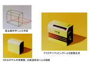
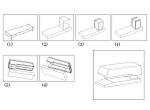
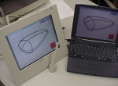
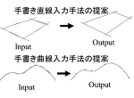
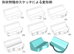
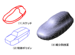
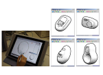
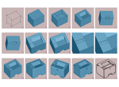
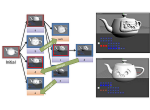

Sketch Modeling
Introduction to My Research Papers
This page introduces major research papers on sketch-based modeling, image-based modeling, freehand sketch input, and sketch interpreter systems for geometric modeling. These studies are based on descriptive geometry, perspective drawing, 3D shape reconstruction, and human-computer interaction for shape design. Three doctoral degrees were completed through related studies.
Image-Based Modeling from a Single Image
単一画像からの3次元モデル生成手法

Since the 1980s, we have studied interactive perspective drawing based on descriptive geometry and the reconstruction of three-dimensional shapes from two-dimensional projection drawings. As a method for generating 3D shape models from a single image, we proposed a method for constructing perspective drawings on a two-dimensional plane based on descriptive geometry, reconstructing 3D shapes from those drawings, estimating viewpoints from a single photographic image, and composing 3D models geometrically.
The motivation for this research came from perspective drawing methods in descriptive geometry. By replacing ruler-and-compass constructions with computational procedures such as line drawing, circle drawing, and intersection calculation, it became possible to construct perspective drawings and derive 3D shapes from them. The interactive perspective drawing method developed in this research was later commercialized as PC software for line illustration drawing by Sasatoku Printing Co., Ltd., with whom we conducted joint research.
- 近藤邦雄, 木村文彦,田嶋太郎,手描き透視図の視点推定とその応用,情報処理学会論文誌 29(7), pp.686-693, 1988.7.15
- 近藤邦雄, 木村文彦,田嶋太郎, レンダリングのための対話型透視図作図手法,情報処理学会論文誌 29(8), pp.721-728, 1988.8.15
- 近藤邦雄,田嶋太郎, 木村文彦,レンダリングのための対話型透視図作画法, 情報処理学会,グラフィクスとCAD研究会,1986.7.113.
- 近藤邦雄,田嶋太郎, 木村文彦,手描き透視図の視点推定とその応用, 情報処理学会,グラフィクスとCAD研究会シンポジウム,1986.12
About ten years after these presentations in 1986, P. E. Debevec and colleagues proposed a method for modeling and rendering architecture from photographs at SIGGRAPH 1996. Y. Horry and colleagues also proposed a method for generating animation from a single image using a spidery mesh interface at SIGGRAPH 1997.
- P. E. Debevec and C. J. Taylor and J. Malik. Modeling and Rendering Architecture From Photographs : A Hybrid Geometry- and Image-Based Approach. In Proceedings of SIGGRAPH 96, pp.11-20, 1996.
- Y. Horry, K.-I. Anjyo and K. Arai. Tour into the Picture: Using a Spidery Mesh Interface to Make Animation from a Single Image . In Proceedings of SIGGRAPH 97, pp.225-232, 1997.
There are many constraints in reconstructing 3D shapes from a single image. In addition to methods in which users provide such constraints, research using image information such as shading has also been conducted. Our studies on 3D shape reconstruction from a single image later developed into sketch interpreter methods for creating 3D shapes from hand-drawn sketches, and into systems for inserting new products into photographs and changing colors in joint research with Dai Nippon Printing.
- B. K. P. Horn, “Shape from Shading, a Method for Obtaining the Shape of a Smooth Opaque Object from One View” , Ph.D. Thesis, Department of Electrical Engineering, MIT, 1970.
- M. Bichsel, A. P. Pentland, A Simple Algorithm for Shape from Shading , In IEEE Proceedings of Computer Vision and Pattern Recognition, pp.459-465,1992.
Sketch Interpreter for Polygon Mesh

Based on our research on interactive perspective drawing using descriptive geometry and 3D shape reconstruction from 2D projection drawings, we proposed a method for generating 3D shapes while drawing freehand sketches. The method begins with a polyhedral object such as a rectangular solid and allows users to cut it or add new rectangular solids by sketching on its faces.
- 杉下悟,近藤邦雄,佐藤尚,島田静雄, ３次元形状生成のためのスケッチインターフェース, 情報処理学会,第48回全国大会講演論文集 3-313,1994
- S. SUGISHITA, K. KONDO, H. SATO, S. SHIMADA, F. KIMURA, Interactive Freehand Sketch Interpreter for Geometric Modelling, Proc. of the 6th Inter. Conf. on Human-Computer Interaction,vol.1, pp.561-566, 1995
- SUGISHITA S., KONDO K., SATO H., SHIMADA S. Sketch Interpreter System for Geometric Modelling, Proc. of ICCAGD, Vol.??, pp.??, 1995
- XU Z.,S. SUGISHITA, K. KONDO, H. SATO, S. SHIMADA, Free-form Surfaces Generation in Freehand Sketch Interpreter System, CADEM'95, Xi'an, pp.267-272, 1995
- S. SUGISHITA, K. KONDO, H. SATO, S.SHIMADA, Sketch Interpreter for geometric modelling, Annals of Numerical Mathematics 3, pp.361-372,1996
- K.MATSUDA,S.SUGISHITA, XU Z., K.KONDO, H.SATO, S.SHIMADA, Freehand Sketch System for 3D Geometric Modeling, Shape Modeling International, pp.55-62, 1997.3
- Zheng XU, K.KONDO, H.SATO, S.SHIMADA, A 3D Interactive Interface for Geometric Modeling, International Technical Conference On Circuits/ Systems Computers & Communications, pp.711-714, 1997.7
- 杉下 悟, 徐 崢,松田浩一, 近藤邦雄,佐藤 尚, 島田静雄, フリーハンドスケッチによる３次元形状入力法, グラフィックスとＣＡＤシンポジウム論文集, pp.1-8, 1995
- 松田 浩一, 杉下 悟,徐 崢, 近藤 邦雄,佐藤 尚, 島田 静雄, 対話型スケッチシステムのためのユーザインタフェース, 第11回ヒューマン・インタフェース・シンポジウム, pp.69-76,1995
- 杉下 悟, 近藤 邦雄,佐藤 尚, 島田 静雄,スケッチ入力による３次元幾何モデルの作成,情報処理学会, 第50回全国大会講演論文集(2), pp.413－414,1995
Our research in the 1990s on generating 3D shapes interactively from freehand sketches preceded the later rapid growth of sketch-based modeling research, which became widely recognized after Professor Takeo Igarashi’s “Teddy” system was presented at SIGGRAPH 1999.
- Takeo Igarashi, Satoshi Matsuoka, Hidehiko Tanaka, "Teddy: A Sketching Interface for 3D Freeform Design" ACM SIGGRAPH'99, Los Angeles, pp.409-416,1999.
- Takeo Igarashi, John F. Hughes, "Smooth Meshes for Sketch-based Freeform Modeling", ACM Symposium on Interactive 3D Graphics, ACM I3D'03, Monterey, California, April 27-30, pp.139-142, 2003.
These methods and related studies were later summarized in books, survey papers, invited talks, and an international publication on interactive sketch modeling.
- 近藤邦雄,工業デザインのためのフリーハンドスケッチを用いたインタラクティブモデリング,日本設計工学会,設計工学,Vol.41,No.1 ,pp.11-21,2005.12
- KONDO Kunio, Interactive Geometric Modeling using Freehand Sketches, International Society for Geometry and Graphics, 2008.8（Invited talk）
- Kunio KONDO, INTERACTIVE SKETCH INTERPRETER FOR GEOMETRIC MODELING, The visual language of technique, between science and art: heritage and expectations in research and teaching (Politecnico di Milano, Italy),2013.6（Invited talk）
- Kunio Kondo, Taichi Watanabe, Interactive Sketch Interpreter for Geometric Modeling, The Visual Language of Technique, Volume 2, Heritage and Expectations in Research, Springer-Verlag, 2014.10
Sketch Interpreter Using a 3D Sketch Surface

This research proposed a method for generating 3D models by setting a sketching plane in 3D space and drawing figures on that plane. Although drawing freely in 3D space may seem easy, the research began from the idea that constraining drawing to a plane is useful for creating intended shapes accurately.
- XU Z.,S. SUGISHITA, K. KONDO, H. SATO, S. SHIMADA, Free-form Surfaces Generation in Freehand Sketch Interpreter System, CADEM'95, Xi'an, pp.267-272, 1995
- Zheng XU, K.KONDO, H.SATO, S.SHIMADA, A 3D Interactive Interface for Geometric Modeling, International Technical Conference On Circuits/ Systems Computers & Communications, pp.711-714, 1997.7
As research in virtual reality and related fields has advanced, it has become clear that accurately indicating intended positions in space is not always easy. How much ambiguity can be accepted in user input when communicating intention to a computer remains an important issue.
Freehand Sketch
フリーハンドスケッチのための逐次清書法

In the 1980s, we studied methods for converting freehand input lines into clean, fair-copy lines and geometric shapes such as squares and circles. Later, in the 1990s, we began studying sequential line beautification methods for treating the process of repeated short sketch strokes used in early-stage design exploration.
This research proposed methods for converting many rough strokes into a single intended line and for drawing straight lines and free curves. Because this method could clean up familiar sketch lines, it was used not only for 2D drawing but also for 3D shape input in Sketch Interpreter research.
- Kunio Kondo, Fumihiko Kimura, Taro Tajima Interactive Rendering by Handwriting Input, International conference on CADDM’87, 1987
- 近藤邦雄, 田嶋太郎, 木村文彦, 曲面の形状感の表現 第3報手描き入力による図形作画法, 精密工学会, 精密工学会誌 53(4), pp.607-612, 1987.4.5
- 近藤邦雄,木村文彦, 田嶋太郎,対話型図形入力法の考察, 日本図学会,1985年度大会研究発表会,1989.5.11
- 松田浩一,近藤邦雄,手書き図形入力のための時系列情報を利用した逐次清書法, 情報処理学会,情報処理学会論文誌, Vol.40, No.2, pp.594-601,1998
- 松田 浩一, 杉下 悟,徐 崢, 近藤 邦雄,佐藤 尚, 島田 静雄, 対話型スケッチシステムのためのユーザインタフェース, 第11回ヒューマン・インタフェース・シンポジウム, pp.69-76,1995
- 松田 浩一, 近藤邦雄, 佐藤尚, 島田静雄,手書き図形入力のための時系列情報を利用した逐次清書法, 日本図学会,1997年度大会（東京）学術講演論文集,1997.5
- 松田 浩一, 小森 望, 近藤邦雄,３次元形状入力のための逐次清書を用いたスケッチインタフェース,精密工学会, 1997年度秋期大会学術講演論文集 ,pp.475, 精密工学会, 1997.10
- 松田浩一, 近藤邦雄, ペンベースインタフェースによる曲線の逐次清書法,情報処理学会, 第56回 全国大会 , (講演論文集(分冊4),pp.84-85) ,1998
Sketch Interpreter Using Freehand Sketch Lines
逐次清書を利用した3次元モデルのスケッチ入力手法
- 松田 浩一, 杉下 悟,徐 崢, 近藤 邦雄,佐藤 尚, 島田 静雄, 対話型スケッチシステムのためのユーザインタフェース, 第11回ヒューマン・インタフェース・シンポジウム, pp.69-76,1995
- 松田 浩一, 小森 望, 近藤邦雄,３次元形状入力のための逐次清書を用いたスケッチインタフェース,精密工学会, 1997年度秋期大会学術講演論文集 ,pp.475, 精密工学会, 1997.10
- 松田浩一, 近藤邦雄, 3次元形状入力のためのスケッチインタプリタシステム,第14回NICOGRAPH/ MULTIMEDIA論文コンテスト論文集, pp.17-26,1998
- 小森望 , 松田浩一 , 近藤邦雄 , 3次元形状入力のためのペンベースインターフェース ,情報処理学会, 第56回 全国大会 , 講演論文集(分冊4),pp.84-85 ,1998
- 松田浩一, 近藤邦雄, ペンベースインタフェースによる曲線の逐次清書法,情報処理学会, 第56回 全国大会 , (講演論文集(分冊4),pp.84-85) ,1998
- 松田浩一, 近藤邦雄, 木村文彦, 手書き入力インタフェースを用いた3次元形状の直接制御法 日本図学会,1999年度大会（東京）学術講演論文集, pp.145-150, 1999.5
- 松田浩一, 小森望, 近藤邦雄, 木村文彦, 3次元形状モデリングのためのフリーハンドによる直接制御法 ,情報処理学会, 研究報告(ヒューマンインタフェース), 99-HI-83, pp.13-18, 1999.5
- 松田浩一, 近藤邦雄, 木村文彦, スケッチ情報を利用した3次元形状制御法 ,情報処理学会研究報告(グラフィクスとCAD),99-CG-96, pp.55-60, 1999.8
Doctoral Dissertation
Shape Editing for Sketch Interpreter
フリーハンドスケッチによる形状編集に関する研究

- Nozomu Komori , Koichi Matsuda, Kunio Kondo, Pen Based Interface to Modify Geometric Models, Proceedings of the 8th ICECGDG, Vol.2, pp.180-184,1998
- 松田 浩一, 小森 望, 近藤邦雄,３次元形状入力のための逐次清書を用いたスケッチインタフェース,精密工学会, 1997年度秋期大会学術講演論文集 ,pp.475, 精密工学会, 1997.10
- 小森望 , 松田浩一 , 近藤邦雄 , 3次元形状入力のためのペンベースインターフェース ,情報処理学会, 第56回 全国大会 , 講演論文集(分冊4),pp.84-85 ,1998
- 松田浩一, 小森望, 近藤邦雄, 木村文彦, 3次元形状モデリングのためのフリーハンドによる直接制御法 ,情報処理学会, 研究報告(ヒューマンインタフェース), 99-HI-83, pp.13-18, 1999.5
Image Synthesis Using Montage Perspective Method for Electronic Catalogue
Based on our research outcomes in image-based modeling, this study proposed a method for estimating photographic conditions and synthesizing images for electronic catalogues. A key feature is that viewpoint and light-source positions can be estimated from a single image so that new images can be composed in a geometrically and optically consistent manner. This research was conducted jointly with Dai Nippon Printing and was developed toward electronic catalogue applications and patent acquisition.
- Shouji Ozawa, Minako Miyama, Kunio Kondo, Estimation of Viewpoint and Light Source for a Montage Perspective of Electronic Catalogue, Proceedings of the 8th ICECGDG, Vol.1, pp.49-53,1998
- 小澤庄次 宮間三奈子,近藤邦雄,電子カタログのための撮影条件の推定と画像合成への応用,第13回NICOGRAPH/MULTI,MEDIA論文集, pp.111-120,1997, (NICOGRAPH論文コンテスト奨励賞受賞)
Sketch Interpreter Using Section Lines
断面線入力による曲面モデリングの研究

- 松田浩一, 近藤邦雄, スケッチ情報を利用した手描きによる細分割曲面生成法, 情報処理学会,情報処理学会論文誌, Vol.41, No.3, pp.551-558,1999
- 松田浩一,近藤邦雄, 手描き断面線を用いた細分割曲面生成手法,日本図学会, 図学研究, Vol.34, No.1, pp.17-22,1999
- K. Kondo, H. Shizuka, W. Liu, K. Matsuda,A Sketch Interpreter System with Shading and Cross Section Lines, Journal for Geometry and Graphics, Volume 9, No.2, pp.177-189, 2005
- Haruki Shizuka, Weizhong Liu, Kunio Kondo, Koichi Matsuda, A Sketch Interpreter System with Shading and Cross Section Lines by Freehand Drawing, International Society for Geometry and Graphics, Proceeding of International Conference on Geometry and Graphics, pp.357-362 ,2004.8
- 松田浩一,近藤邦雄 ,曲線の重ね書き入力を用いた3次元形状入力法 ,情報処理学会,第58回（平成11年前期）全国大会講演論文集第4分冊, pp.187-188, 1999.3
Sketch Interpreter by Shading Control
Shadingを利用した3次元モデル生成

- K. Kondo, H. Shizuka, W. Liu, K. Matsuda,A Sketch Interpreter System with Shading and Cross Section Lines, Journal for Geometry and Graphics, Volume 9, No.2, pp.177-189, 2005
- 松田浩一,鈴木俊博,静春樹,近藤邦雄,スケッチインタプリタシステム:手描き陰影による3 次元形状制御法,情報処理学会,情報処理学会論文誌, Vol.44,No.11,pp.2547-2555, 2003.11
- Haruki Shizuka, Weizhong Liu, Kunio Kondo, Koichi Matsuda, A Sketch Interpreter System with Shading and Cross Section Lines by Freehand Drawing, International Society for Geometry and Graphics, Proceeding of International Conference on Geometry and Graphics, pp.357-362 ,2004.8
- 鈴木俊博, 松田浩一, 近藤邦雄, 手描きスケッチにおける陰影表現を用いた3次元形状制御法,日本図学会, 本部例会, 2001.12
- 鈴木俊博,近藤邦雄,松田浩一, 手描きスケッチにおける陰影表現を利用したスケッチインタプリタ, 情報処理学会, 第64回（平成14年前期）全国大会講演論文集第4分冊, pp.779-780, 2002.3
- 静 春樹,鈴木俊博,近藤邦雄,手描きスケッチにおける陰影表現を用いた３次元形状制御手法,情報処理学会,グラフィクスとCAD研究会, 2002-CG-108,108-2,pp.7-12,2002.8
- 静 春樹,松田 浩一,近藤邦雄 ,手描き断面線と陰影表現を用いた3次元形状入力手法,画像電子学会,情報処理学会,Visual Computing /グラフィクスと CAD 合同シンポジウム 2004, pp.25-30, 2004.6
- 戸津 光,松田 浩一, 近藤邦雄, Weizhong Liu ,手描き陰影による曲面形状の制御法,芸術科学会,2004年第3回NICOGRAPH春季大会論文&アート部門コンテスト ,pp.31-32 ,2004.5
Sketch Interpreter Using Topology Library

This research analyzes the topology of sketch lines when users decide intended shapes while drawing sketches on projected views of 3D objects. Based on this topology, the method performs operations such as cutting and adding parts to 3D shapes. It is characterized by partial shape recognition using topology templates and was developed for polygonal shapes as well as subdivision surfaces.
- Weizhong Liu, Kunio Kondo, Jun Mitani,3D Geometric Modeling Using 2D Template Topology Library, The Society for Art and Science, Proceedings of NICOGRAPH International 2005, pp.95-100,2005.4
- Weizhong Liu, Kunio Kondo, Jun Mitani, Geometric Modeling by Using Freehand Sketch Input with Template Topology Library, Applications of Digital Techniques in Industrial Design Engineering-CAID&CD'2005, Proceedings of the 6th international conference on Computer-Aided Industrial Design & Conceptual Design, pp.135-140 ,2005.5
- Weizhong Liu, Kunio Kondo, Jun Mitani, An Interactive Sketch-based Modeling System using a Topology Library and Subdivision Surfaces,Eurographics,2nd Eurographics Workshop on Sketch-based Interfaces and Modeling (SBM2005), Eurographics Symposium Proceedings,pp.89-98,2005.8
- Weizhong Liu, Kunio Kondo, Jun Mitani, Geometric Modeling using 2D template by Freehand Drawings,日本図学会,2005年度大会学術講演論文集, pp.81-86, 2005.5
- Weizhong Liu, Kunio Kondo, Jun Mitani, A Freehand Sketch Interpreter System for Constructing 3D Solid Models. インタラクション2005, 情報処理学会シンポジウムシリーズ. Vol.2005, No.4, pp.159-160, 2005.2
Doctoral Dissertation
Weizhong Liu，A 3D sketch interpreter system using template library and subdivision methods for geometric modeling （形状モデリングのためのテンプレートライブラリと細分割手法を用いたスケッチインタプリターシステムの構築），2005
Sketch Interpreter Using Implicit Surface

This research proposed a modeling system that represents shapes using MPU implicit surfaces. Users can draw sketch lines on the implicit surface to perform inside-outside judgments, cutting, deformation, and scaling. The generated shape data can also be converted into STL data, making it possible to fabricate models using rapid prototyping systems.
- Kunio Kondo, Taichi Watanabe, Interactive Sketch Interpreter for Geometric Modeling, The Visual Language of Technique, Volume 2, Heritage and Expectations in Research, Springer-Verlag, 2014.10
- 黄檗 雅也,大竹 豊,金井 崇,近藤 邦雄,MPU陰関数曲面を用いたスケッチモデリングシステム,画像電子学会,情報処理学会, Visual Computing /グラフィクスと CAD 合同シンポジウム 2006,2006.6
- 黄檗 雅也,大竹 豊・金井 崇,近藤 邦雄,陰関数曲面を用いた集合演算によるスケッチモデリングシステム ,日本図学会,2006年度大会学術講演論文集,2006.5
- 黄檗雅也,大竹豊,金井崇,近藤邦雄 ,インタラクティブスケッチによる陰関数曲面モデリング,画像電子学会 ,ビジュアルコンピューティングワークショップ2006, 2006.10
- 黄檗雅也, 大竹豊, 金井崇, 道川隆士, 近藤邦雄, 断面線を用いた陰関数曲面の生成, 日本図学会, 2007年度大会学術講演論文集, 2007.5
- 近藤邦雄,黄檗雅也,大竹豊,金井崇,道川隆士,日本図学会第2回デジタルモデリングコンテスト入選, フリーハンドスケッチによる3次元形状モデリング, 2008
Sketch Interpreter with History Management of Strokes

This research proposes digital sculpting methods that manage the history of user strokes. By using stroke history, the system supports interactive 3D shape modeling and editing processes.
- Ryota Takeuchi, Taichi Watanabe, Koji Mikami, Kunio Kondo, Proposal of digital sculpting with history management of strokes,芸術科学会論文誌,Vol.11, No.4, 2012.12
- Ryota Takeuchi, Taichi Watanabe, Koji Mikami, Kunio Kondo, Proposal of digital sculpting with history management of strokes, NICOGRAPH International 2012, 2012
Doctoral Dissertation
竹内亮太，ストローク履歴を活用した3次元形状モデリング手法の研究
, 2012
博士（メディアサイエンス）